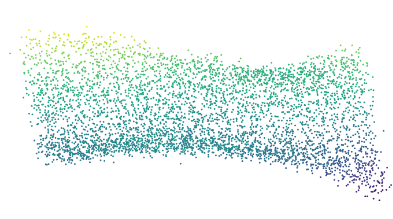
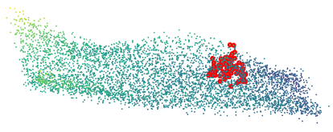
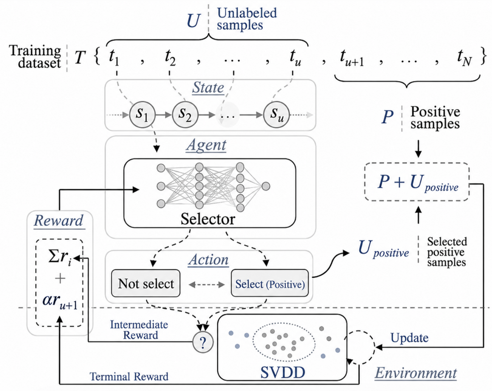

Label-Efficient Surface Defect Detection with Reinforcement Learning



The Problem
- Dataset: local 3D point-cloud patches of metal surfaces produced by wire-arc additive manufacturing (WAAM), alongside synthetic point-cloud patches with controlled defects. One patch is one sample.
- In manufacturing inspection, defects are rare and expensive to label, while normal surface patches are easier to obtain.
- We frame defect detection as Positive-Unlabeled (PU) learning: a small set of confirmed normal patches plus an unlabeled pool that mixes normal and defective patches.
- Classical PU methods either rely on an estimate of the defect ratio (class prior), which is hard to obtain on the shop floor, or on fixed selection rules that cannot adapt.
Key Contributions
- Combined a one-class Deep SVDD model, which learns a compact boundary around normal data, with a reinforcement-learning selector that learns which unlabeled samples to promote as reliable normal samples.
- The selector and the detector improve together: the selector is rewarded by the detector’s feedback, so the selection policy is learned rather than hand-crafted.
- Requires no estimate of the defect ratio, removing a fragile step of classical PU learning.
- Each patch is represented by an FPFH descriptor of its local geometry; the model outputs a patch-level normality score to help prioritize suspicious areas for inspection.
Evaluation on Synthetic and Real Point-Cloud Data
- Synthetic data: compared with Deep SVDD, nnPU, and PULNS across three controlled defect settings and 20 training seeds. The method led all three reported metrics in the medium and hard settings; PULNS had a slightly higher AUC in the easy setting.
- As defects become shallower or measurement noise rises, detection becomes harder. These controlled tests help identify where the method is less reliable.
- Real WAAM data: on one retrospective spatially blocked split, the method had the best mean normal-class F1, false omission rate, and AUC among the four methods. Across five exploratory spatial splits, it led each metric on three of five.
- Results are measured per surface patch. Validation uses labeled normal and defective patches; generalization to new production batches has not yet been established.
Why It Matters
- The approach is designed to prioritize suspicious surface patches when confirmed-normal examples are limited and exhaustive defect labeling is costly.
- Using the scores in a production inspection workflow would require independent testing on new prints and review by manufacturing experts.